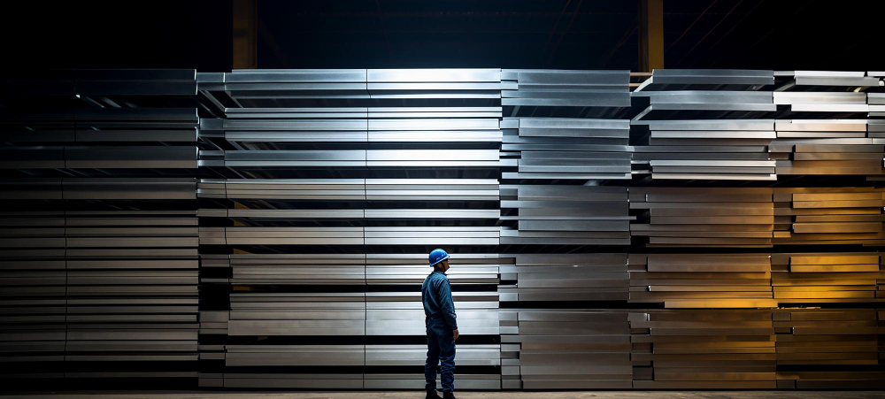

Our uncompromising commitment to metallurgical excellence ensures that every Falcon Stainless Steel tube exceeds global industrial standards.
At Falcon Steels, quality remains the foundation of everything we do. We are committed to manufacturing premium stainless steel tubes that meet customer expectations for strength, durability and dependable performance.
From material selection to final delivery, every stage of our process is carefully monitored to maintain consistency, precision and product reliability across our complete range of stainless steel tube solutions.
Our NABL-accredited in-house laboratory is equipped with world-class testing instruments to validate every parameter of our stainless steel.
Using Optical Emission Spectrometers (OES) to accurately determine the exact elemental composition and assure raw material purity.
100% of our tubes undergo high-pressure hydrostatic testing to ensure absolute leak-proof integrity under extreme operational conditions.
A non-destructive electromagnetic evaluation process used to detect the minutest sub-surface flaws, cracks, or discontinuities.
Universal Testing Machines (UTM) perform rigorous Tensile, Yield, Elongation, Flattening, and Flaring tests to verify structural strength.
Advanced metallurgical microscopes examine grain structure to prevent carbide precipitation and guarantee optimal material behavior.
Laser micrometers and surface roughness testers ensure absolute dimensional precision and perfect mirror/matt finishing.

The manufacturing process begins with careful selection of quality stainless steel materials to ensure reliable performance and long-lasting durability.
Modern production techniques are utilized to manufacture stainless steel tubes with consistency, accuracy and dependable product quality.
Products are carefully inspected throughout the manufacturing process to maintain quality standards and customer expectations.
Finished products are securely packed and prepared for delivery, ensuring safe handling and dependable service for every order.
Falcon Steels is committed to maintaining consistent quality throughout the manufacturing process. Our focus on precision, reliability and customer satisfaction helps us deliver dependable stainless steel tube solutions for diverse applications.
Require certified, high-grade stainless steel for your critical project? Reach out to our technical team for detailed Material Test Certificates (MTC) and samples.
Consult Our Experts